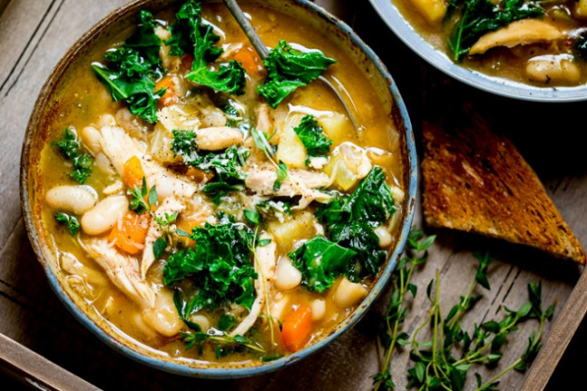
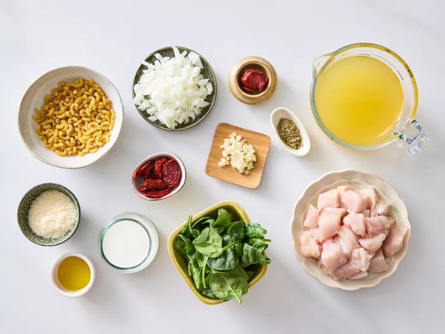
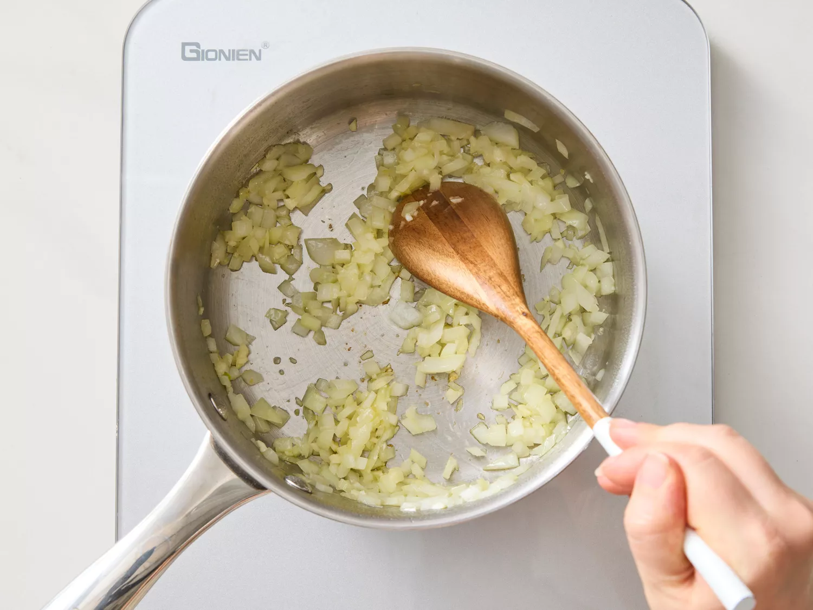
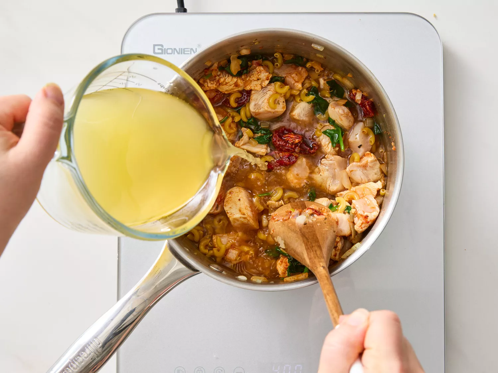
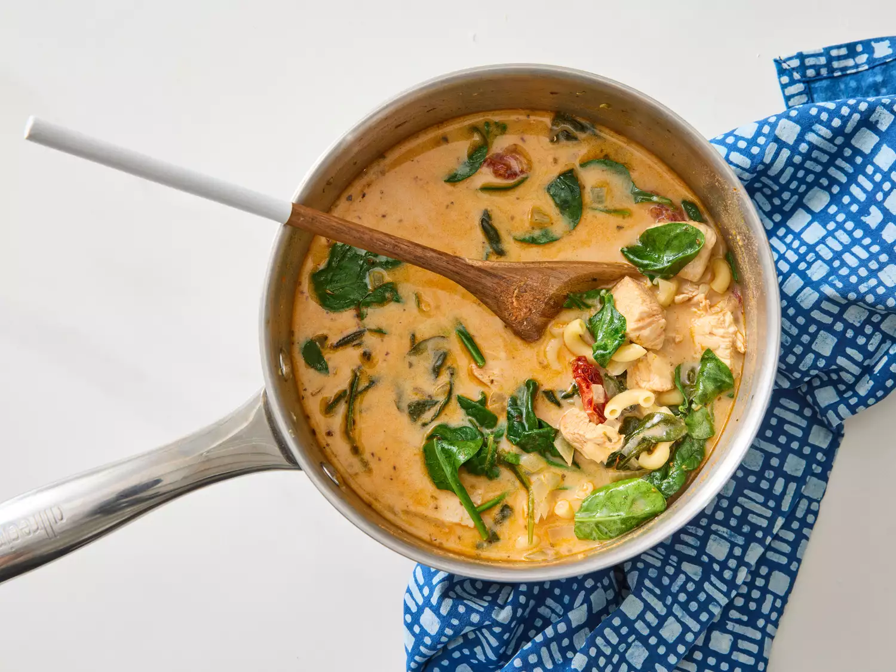

This Tuscan chicken soup features a boneless chicken breast in creamy broth with sun-dried tomatoes and spinach. It’s especially comforting on blustery winter days.

Gather the ingredients.

Add oil to a saucepan over medium heat. Once oil is hot, add onion, and sauté until translucent, about 5 minutes. Add garlic; saute until fragrant; about 1 minute.

Pour in chicken bone broth. Add Tuscan seasoning, chicken pieces, sun-dried tomatoes, and torn spinach. Stir to combine. Add in the pasta. Simmer until pasta is tender with a bite, about 10 minutes.

Sprinkle in Parmesan; stir to combine. Stir in heavy cream. Serve immediately.
